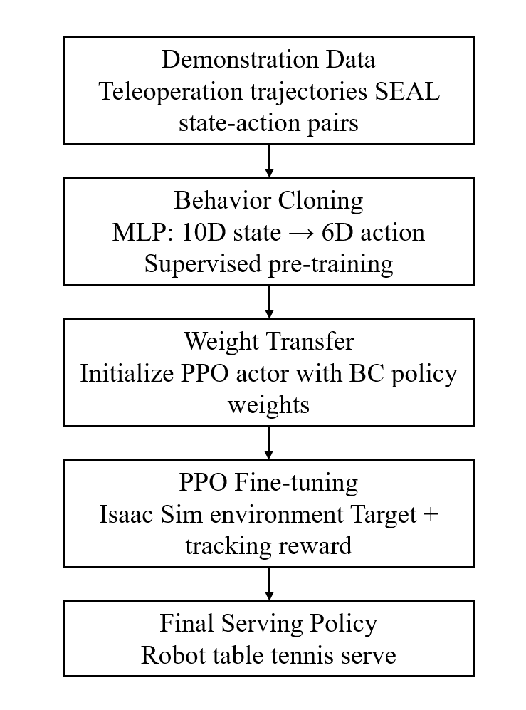

A Reinforcement Learning Approach for Table Tennis Robot Serve
Abstract
This project investigates the application of reinforcement learning (RL) to the problem of generating table tennis robot serving motions in a physics-based simulation environment. Rather than relying on hand-crafted trajectories or motion capture data, we formulate the serving task as a sequential decision-making problem in which an agent learns a policy that maps observed robot and ball states to joint-space actions. The agent is trained using Proximal Policy Optimization (PPO), with a reward function designed to encourage consistent ball contact, appropriate launch angle, and landing accuracy on the target side of the table. We describe the environment setup, state representation, action space, and reward shaping choices in detail. While the project remains exploratory in nature and does not claim to achieve production-level performance, the training observations suggest that the learned policy is capable of producing structurally consistent serving motions across episodes, providing a foundation for further investigation into RL-based robot sports control.
Simulation Environment
All experiments are conducted in NVIDIA Isaac Sim, a physics-based robotics simulation platform. The environment is designed to comply with ITTF (International Table Tennis Federation) standards: the table dimensions, net height, and ball properties follow the official specifications to ensure that any learned serving behavior is grounded in realistic physical conditions.
The robot arm used is a Universal Robots UR10, a 6-DOF industrial manipulator equipped with a table tennis paddle as the end-effector. The UR10 is mounted at one end of the table and is tasked with generating a full serving motion — swinging the paddle to strike the ball and direct it onto the opposite side of the table. The coordinate frame is aligned with the table surface, with the X/Y axes along the table plane and Z pointing upward.

Figure 1: Isaac Sim simulation environment — UR10 robot with end-effector paddle and ITTF-standard table tennis table.
Method Overview
Our approach follows a standard model-free RL loop applied to a robotic serving task. The high-level workflow consists of five stages:
- Robot and Environment Setup. A robotic arm equipped with a table tennis paddle is placed in a simulated environment modeled after a standard table tennis table. The simulator handles rigid-body dynamics, contact forces, and ball trajectories.
- State Observation. At each timestep, the agent receives a state vector that encodes the current joint angles and velocities of the robot arm, the position and velocity of the ball, and the distance between the paddle and the ball.
- Policy Action Output. The policy network outputs target joint velocities or torques for each controllable joint. Actions are bounded to safe operating ranges to prevent joint limit violations.
- Reward Calculation. A shaped reward signal is computed after each action, combining terms for ball-contact success, launch trajectory quality, and landing position accuracy.
- Policy Update via RL. Collected trajectories are used to update the policy parameters using PPO, iterating until the episodic return converges or a fixed training budget is exhausted.
Reference: SEAL — Sample-Efficient Adjustment-Learning
As a key reference for this project, we study SEAL (Sample-Efficient Adjustment-Learning Method for Table Tennis Robot Serve), presented at ICRA 2025 (IEEE Xplore · Video overview). SEAL demonstrates a practical pipeline for learning table tennis serving policies in simulation with high sample efficiency, leveraging an Isaac-based physics environment that accurately models ball–paddle contact and flight trajectories.
A key motivation for consulting SEAL is to verify that the Isaac simulation environment can successfully run a table tennis serving task. The results from SEAL confirm that Isaac provides sufficiently realistic dynamics for training serving policies, which informs the choice of simulator for our own RL experiments.
SEAL: learned serving policy rollout.
End-effector teleoperation used for data collection in SEAL.

Figure: Ball landing distribution from SEAL's 6-DOF serving experiments (reproduced from Guo et al., ICRA 2025).
Reinforcement Learning Framework
Algorithm — PPO
We use Proximal Policy Optimization (PPO) as the core RL algorithm. PPO is an on-policy actor-critic method that constrains each gradient update via a clipped surrogate objective, preventing destructively large policy changes while still making consistent progress. Both the actor and critic are implemented as multi-layer perceptrons (MLPs). The actor outputs the mean and log-standard deviation of a Gaussian distribution over the action space; the critic estimates state value for generalized advantage estimation (GAE).
State Space
At each control step, the agent observes a 10-dimensional state vector:
- Joint angles of the UR10 arm (6 DOF)
- Ball position in the table frame (x, y, z)
- Ball velocity (magnitude or directional component)
All observations are normalized to zero mean and unit variance before being fed into the policy network to improve training stability.
Action Space
The policy outputs a 6-dimensional continuous action vector corresponding to target joint velocities (or incremental joint positions) for each of the UR10's joints. Actions are clipped to safe operating ranges before being passed to the low-level joint controller in Isaac Sim.
Reward Function
The reward signal combines three terms designed to guide the agent toward a successful serve:
- Contact reward: a positive bonus when the paddle successfully makes contact with the ball, encouraging the agent to swing toward the ball.
- Trajectory reward: a shaping term that decreases the distance between the paddle and the ball, providing dense feedback during early exploration when contact events are rare.
- Landing reward: a positive bonus when the ball lands on the target half of the opposite side of the table, directly encoding the serving objective.
Sparse rewards alone proved insufficient during early experiments; the dense trajectory shaping term was critical for obtaining reliable ball contact within a reasonable training budget.
System Architecture
The system follows a closed-loop data-flow architecture with three main components: the Isaac Sim environment, the policy network, and the joint controller.
Isaac Sim
Physics simulator
Ball + robot dynamics
Observation
Joint angles (6D)
Ball pos & vel (4D)
Policy (MLP)
PPO actor–critic
Outputs action (6D)
Joint Controller
Clip & scale action
Send to UR10 joints
Figure 2: Data flow — Isaac Sim → observation → PPO policy → joint controller → Isaac Sim.
At each timestep, Isaac Sim provides the normalized observation to the policy network. The actor MLP outputs a 6-dimensional action (target joint velocities) which is clipped to safe ranges and forwarded to the UR10 joint controller. After execution, Isaac Sim steps forward, computes the reward, and returns the next observation. Collected transitions are stored in a rollout buffer; once a fixed number of steps is reached, PPO performs several epochs of mini-batch gradient descent before the next rollout begins.
Training Pipeline
To investigate the role of prior knowledge in RL-based serving, we design and compare two training strategies that share the same PPO loop and reward function but differ in how the policy is initialized.
Strategy A — RL from Scratch
- Random policy initialization
- PPO rollout collection in Isaac Sim
- Reward: contact + trajectory + landing
- Repeat until convergence (~16k steps)
No prior knowledge. Policy must discover serving motion from scratch via exploration alone.
Strategy B — RL after Supervised Learning
- Teleoperation data collection (SEAL)
- Behavior Cloning: MLP trained on state-action pairs
- Transfer BC weights to PPO actor
- Freeze weights → warm-up phase (~3k steps)
- Unfreeze → PPO fine-tuning in Isaac Sim
Policy initialized from human demonstration. PPO fine-tunes on top of the pre-trained behavior.

Figure 3: Detailed pipeline for Strategy B — Behavior Cloning pre-training followed by PPO fine-tuning in Isaac Sim.
Both strategies are evaluated under identical PPO hyperparameters and reward functions. The key experimental question is whether supervised pre-training provides a useful initialization that PPO can build upon, or whether it introduces instability that prevents further improvement. The results of this comparison are presented in the following section.
Results
We compare two training conditions over approximately 16,000 environment timesteps: RL after Supervised Learning (blue), in which the PPO actor is initialized with weights from a Behavior Cloning pre-trained policy, and RL from Scratch (orange), in which PPO is trained from random initialization without any prior demonstration data.
In the RL after Supervised Learning condition, the policy weights were frozen during an initial warm-up phase. After the freeze is released at approximately the 3k timestep mark, both the mean episode reward and the mean episode length drop sharply. The reward falls below zero and does not recover throughout the remaining training budget, suggesting that the PPO update destabilizes the pre-trained policy rather than improving it. The RL fine-tuning stage did not converge to a stable or better-performing serving behavior.
In contrast, RL from Scratch starts with no prior knowledge of the task but exhibits a gradual upward trend in mean episode reward from the beginning of training. The reward stabilizes at approximately 3.0–3.5 after around 4k timesteps and remains at that level for the rest of training. Nevertheless, the final converged reward does not exceed the initial reward observed in the supervised pre-trained policy before fine-tuning began.
Overall, these results indicate that neither training strategy produces a policy that outperforms the original SEAL approach. The RL fine-tuning phase failed to leverage the supervised initialization effectively, while RL from scratch converges to a lower reward ceiling. The findings highlight the difficulty of applying standard PPO fine-tuning on top of imitation-learned policies and motivate further investigation into more stable warm-starting strategies.

Figure 3a: Mean episode reward (ep_rew_mean) over training timesteps.

Figure 3b: Mean episode length (ep_len_mean) over training timesteps.
Demo Video
Demo video will be added after the final experiment recording is available.
A recorded rollout of the trained serving policy in the simulation environment.
Project Materials
The full project report will include detailed descriptions of the environment design, hyperparameter choices, ablation studies, and discussion of limitations.
Project report will be added after the final submission is completed.
Acknowledgement
This work was completed as a Reinforcement Learning final project at National Yang Ming Chiao Tung University. We thank the course instructors and teaching assistants for their guidance and feedback throughout the project.
Citation
@misc{cheng2026tabletennis,
title = {A Reinforcement Learning Approach for Table Tennis Robot Serve},
author = {Li-Yi Chang and Ting-Yu Song and Po-Chuan Chiou and Ying-Hsien Cheng and Hung-Yu Chen},
year = {2026},
note = {Reinforcement Learning Final Project, National Yang Ming Chiao Tung University},
url = {https://github.com/110611074/table-tennis-robot-project-page}
}